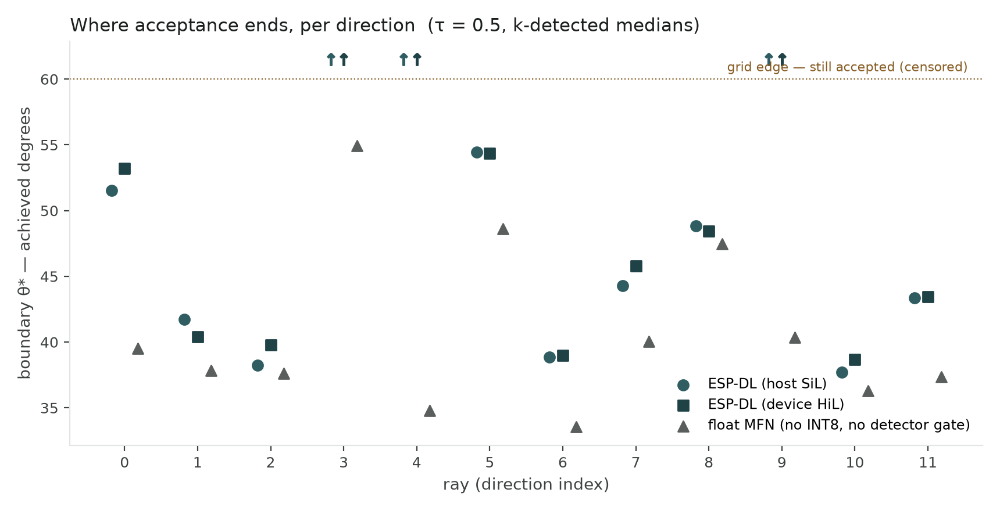
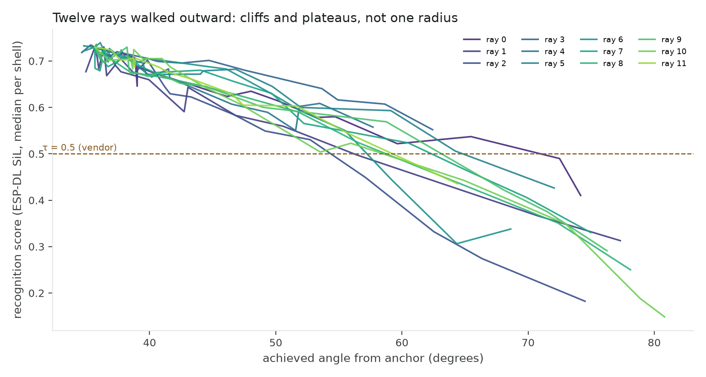
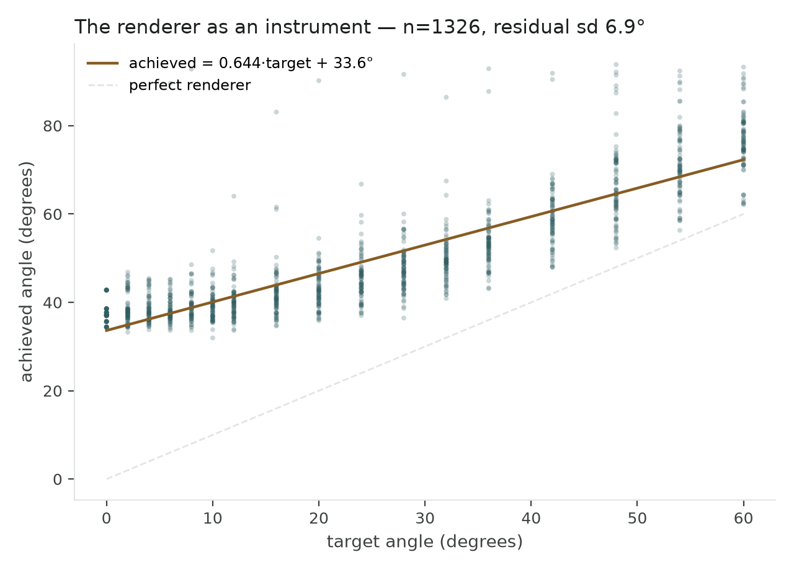
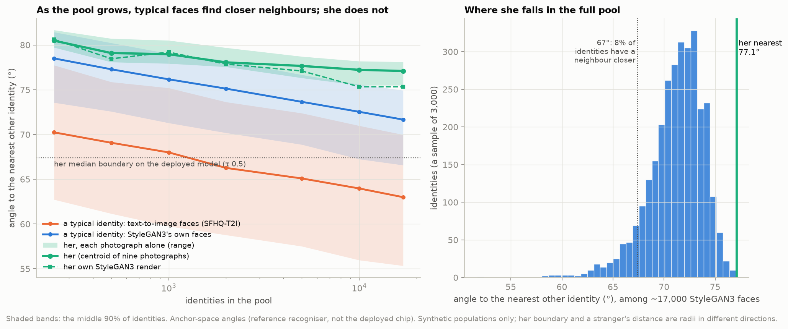
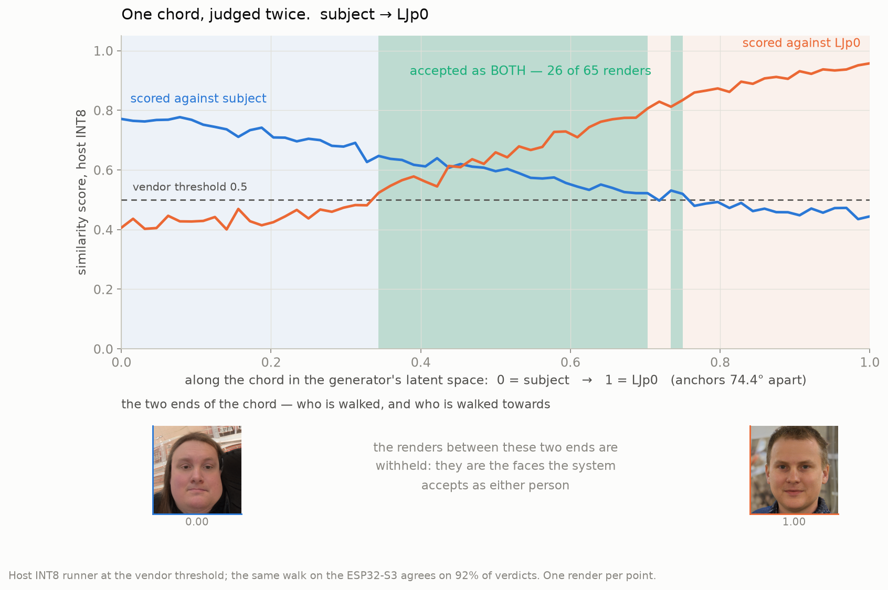
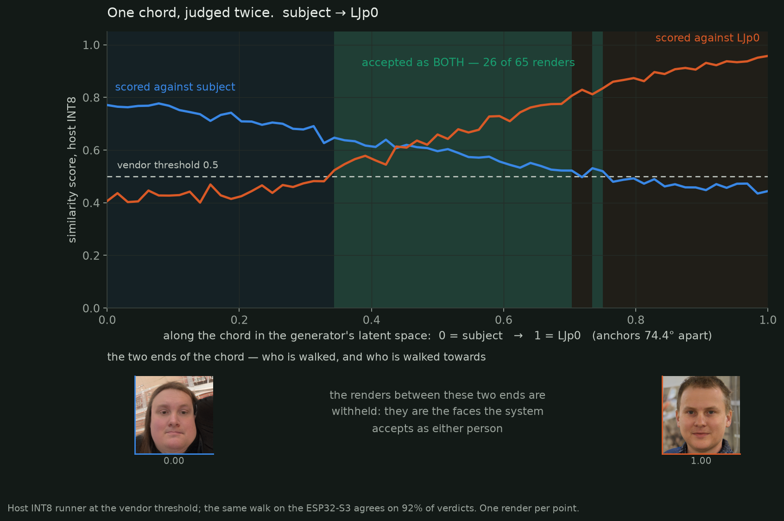

The measured acceptance surfaceOne identity to the end · a pilot of twenty beside her
One real identity (Dr James’), moved away from herself in 1,024 measured directions through StyleGAN3, every render judged by five models including the deployed chip. At the vendor threshold the acceptance region reaches a median of 67.4° — and it is not a circle. Twenty more identities have since been measured the same way. That is the current measurement, and it is experiment 17; the chain below is twenty experiments long, each one forced by a problem or a surprise the last turned up, including four that put the instrument under its own scrutiny and ended by retiring it, and a withdrawal that cost the project its first surface entirely. This page walks the whole chain, not just the headline.

What follows is the whole chain: twenty experiments, in the order they happened, each one prompted by something the previous experiment threw up — a problem, a bug, or a question the last result couldn’t answer. Experiments 12–15 turn the apparatus on itself: what the renderer was allowed to be, what it actually does to a request, whether the two rigs were even shown the same pixels, and the framing experiment that ended with Arc2Face retired as the stimulus generator. The sixteenth closes the loop the withdrawal opened: the same boundary diagrams, re-measured under full provenance. The eighteenth is a negative result kept on the record: an attempt to predict the recogniser’s embedding from the latent, so a ray could be aimed without rendering it, which failed by more than an order of magnitude and explained why. The nineteenth walks at a named stranger and finds a single face the pipeline accepts as either of two people; the twentieth asks who that stranger should be, and catches the age estimator returning 47 for a child. Earlier entries are folded to keep the page walkable — open any of them, or jump from the list below; the last three are already open.
The experiments, in order
01
Shell sampling · pilot sweep
Shell sampling and the pilot sweep
Question Before any boundary could be trusted, the basic sampling geometry needed checking: does a requested perturbation land where it’s asked, does the SUT’s score behave sensibly across it, and can raw renders even reach the device’s detector?
Done 11 shells at equal angle from cos 0.9995 to 0.60, 512 shared directions, 20 rays rendered per shell (220 images) through the ESP-DL SiL at the vendor’s default detector threshold.
Came back Achieved cosine (the render re-embedded) tracks requested cosine with slope ≈1 and a fixed offset ≈0.23 — curves have to be read against achieved, not requested. The SUT score curve falls smoothly, ≈0.70 to ≈0.42, crossing tau = 0.5 around requested ≈0.69 / achieved ≈0.45. But the detector passed only 5–25% of raw renders at its default 0.5 threshold (60–80% at 0.3) — Arc2Face’s output is too painterly to clear it.
Changed Curves plot against achieved cosine from here on; the corpus should concentrate shells between requested 1.0 and ≈0.55; and raw renders can’t be used as-is for a detector running at its default threshold — compositing became the next question.
02
Compositing
Tier-0 compositing trial
Question Directly prompted by the detection problem above: can warping the rendered face into a real photographic plate restore normal detection without corrupting the identity being measured?
Done Warp the rendered face interior — a landmark-derived mask that stops below the hairline — into a real background plate. Ran 8 trial composites through the default-threshold detector, plus a control: three unrelated faces composited into the same plate.
Came back 8/8 trial composites pass the default 0.5 detector (det 0.81–0.99, MFN cosine 0.64–0.76). Control: the three unrelated faces score 0.26–0.37 against the enrolment (near 0 raw) — the plate alone is worth about +0.3 similarity.
Changed Composites are detector-faithful but identity-biased: useful for communication and figures, not for the recognition measurement itself. Raw renders at the relaxed 0.3 threshold stayed the clean recognition curve; compositing was ruled out as a stand-in for raw renders in the boundary search.
03
First surface · 20 directions
Per-direction refinement, 20 directions
Question The pilot’s mean score curve was smooth and reassuring, but a single averaged curve can’t show whether some directions are far more fragile than others — and per-direction behaviour, not the average, is the actual object of the study.
Done Bisection per ray to ±0.03 ε on the 20 pilot directions, three renders per evaluation, majority verdict on the median score so one bad render (a hand across the face) can’t set a boundary on its own — 150 evaluations, 445 renders, ≈70 minutes.
Came back 18 of 20 rays bounded (2 right-censored at the cos-0.60 ceiling). Boundary angle mean 32.7° ± 12.9°, range 6.8°–49.5°; the most tolerant bounded direction (ray 18) reaches 7.2× further from the anchor than the least tolerant (rays 8/14).
Changed Gave the first real surface: a star, not a circle. Turned “how far can this identity drift” into a direction-dependent question, and set the next targets — more directions, and a way to separate an INT8 artefact from ordinary face-recognition behaviour.
04
Withdrawn 2026-08-23 · 64 directions
Higher angular resolution, 64 directions
Question 20 rays established that the shape was real, but was too few to trust an individual boundary or a precise anisotropy ratio.
Done Three further refinement runs extended the pilot’s 20 rays to 64 (one run’s summary json was never written — the machine crashed before the flush — and was recovered from its sqlite), then merged with quality filtering.
Came back Well-determined mean boundary 37.7° (95% CI 34.0–41.1°), extremes ratio 7.6×, robust P90/P10 spread 3.8×, 51 of 64 rays well-determined. The merge caught two defects in the project’s own analysis, both fixed here: three rays whose unperturbed render was itself rejected had been recorded as 0° boundaries, which made the naive anisotropy ratio infinite; and two of the tightest rays had each been decided from only two evaluations, driving a spurious 30× headline (a third ray, decided from three, was caught by the same rule).
Changed 7.6× replaces 7.2× and the spurious 30× as the number to cite. Anchor-rejected, flagged and censored are now first-class fields on every ray, excluded from the headline statistic and shown rather than silently dropped — the visualisation below marks all three.
The figures These are that surface — the ones this page led with until 2026-09-18, kept here because they are where the chain starts. They are withdrawn, and the notice below says why.
These figures are withdrawn pending re-measurement. They are kept on the page because they are where the chain starts, not because they are current. The successor figures are experiment 16; the project’s current boundary measurement is experiment 17, above.
The run that produced them recorded no render configuration — surface_runs stored the backend name and nothing else, with no preset, adapter scales, steps or weight digests. Model assets were added and removed on the machine during the day these renders were made, and a re-run under a known configuration moved every one of thirteen re-tested rays in the same direction. That is more consistent with a changed rendering pipeline than with thirteen independent corrections, and there is no record that would settle it.
Not affected: the perturbation geometry (unit(anchor + ε·tangent), cos = 1/√(1+ε²)); the ESP-DL SiL defect findings and their upstream reports; that the acceptance region is direction-dependent — the shape is not in question, the numbers are.
Boundary by direction
64 spokes, spaced evenly for legibility — only the radius carries meaning. Anchor-rejected rays sit at the centre.
Same 64 rays, sorted
Bounded rays sorted by boundary angle. Censored rays sit at the right, marked open; flagged rays (fewer than 4 evaluations) are hatched.
05
Cross-judge comparison
Four judges and FAR calibration
Question Comparing the edge model against float judges needs matched operating points, not a shared numeric threshold — scores aren’t on a common scale. Matching on genuine acceptance alone was tried first and isn’t enough: a model that accepts every genuine pair looks maximally tolerant regardless of how promiscuous it actually is.
Done Scored every render through four judges — HiL, SiL, float MobileFaceNet, float ArcFace R100 — off identical crops, and calibrated each judge’s threshold against an impostor cohort drawn from SFHQ-T2I (MIT-licensed synthetic faces).
Came back The impostor check immediately caught a real bug: ESP-DL emits landmarks as [LE,LM,N,RE,RM], insightface’s norm_crop expects [LE,RE,N,LM,RM]. Feeding the raw order warped every float judge’s crop (≈25px landmark error) and impostors scored 0.95. Fixed with the permutation (0,3,2,1,4) — error now ≈2px — impostor medians fell to 0.014 (MFN) and 0.007 (R100). Separately: at each judge’s own matched operating point, neither float judge rejects inside the current cos ≥ 0.60 shell range — both stay fully censored across all 19 comparable rays.
Changed Voided every float-judge number computed before the fix. Established that the corpus doesn’t yet reach far enough out for the float judges to disagree with the edge model at all — the shell range needs extending before cross-judge comparison means anything.
06
SiL fidelity
Hardware-in-the-loop parity
Question The SiL is the vendor’s own runtime, bit-exact against an independent reference — but that’s agreement with a reference, not with the chip. Its fidelity to the real silicon was still unverified.
Done idf_apps/hil_runner2 mirrors the host runner’s protocol over native USB-Serial-JTAG, so identical pixel buffers can be pushed to both host and device and the returned features compared element-wise.
Came back With identical pixels and identical keypoints, host and device features agree to cosine 0.980–0.983 — not bit-exact. Letting each side run its own detector drops that to 0.905–0.938. Two separate divergences: the recognition model itself differs by ≈2% (max element difference ≈2.4–3.1e-2), and the detector disagreeing about landmarks roughly triples the total divergence.
Changed The SiL is a good proxy, not a substitute. A surface mapped entirely on the host is indicative; boundaries need device confirmation. Set up the next two measurements directly: how far a boundary actually moves (not just an embedding), and how much of the divergence is the detector’s doing.
07
SiL vs HiL · boundaries
Boundary displacement
Question Embedding divergence isn’t the quantity that matters for this method — what matters is whether the accept/reject boundary itself moves between host and device.
Done Took probes from the completed 20-ray refinement run, re-scored the identical bytes through both judges, and interpolated a boundary separately for each from up to six coarse probes per ray.
Came back 8 of 20 rays had a crossing on both sides. Mean shift device minus host: −1.1° on boundaries averaging ≈33°; scatter std 4.3°, largest single shift 7.9°; mean paired score difference 0.013.
Changed The bias is small (≈3%) but the per-ray disagreement isn’t — up to 8° on a 33° boundary is a quarter of the radius. Recorded plainly: a host-mapped surface is sound for aggregate statistics (means, the anisotropy ratio) and marginal for per-direction claims (which exact ray is narrowest) — which is precisely the interesting part of this study. Caveat carried forward: eight rays, six coarse probes each, so interpolation error is mixed in with genuine judge disagreement.
08
SiL vs HiL · detection
Detector agreement
Question If the two detectors agreed closely enough, detection could be lifted off the device for speed — host detects, device only embeds. Does it agree closely enough?
Done scripts/detector_parity.py over 9 images, comparing bounding boxes, landmarks, detection scores, and embeddings under both a fully independent pipeline and a forced-common-landmark decomposition.
Came back Landmarks were never identical (0 of 9), and pixel deviation was small (mean 1.4px, max 3.6px; bounding boxes to 5px) — but detection score wasn’t: mean absolute difference 0.194, worst case 0.44, enough for the two implementations to disagree about whether a face exists at all, not just where it sits. Full-pipeline embedding agreement: 0.900. Forcing both sides onto the same landmarks raises that to 0.975 — but only by deleting the component that actually diverges.
Changed Decision: the detector stays on the device. The deployed pipeline is the measurement target, not the recogniser in isolation, so the project’s headline host–device figure is 0.900; 0.975 is kept only as a diagnostic decomposition, never cited as parity. Running the full pipeline on-device costs more compute per probe, which raised the priority of the transport work next.
09
Throughput
Transport optimisation
Question HiL parity is only useful if HiL is fast enough to run at scale. At the rates seen so far — up to 10.8 s per probe — it wasn’t.
Done Identified which of the board’s two USB ports the runner was actually using. The UART bridge (CH343, 1a86:55d3) enumerates alongside native USB-Serial-JTAG (303a:1001) and is easy to pick by mistake.
Came back The bridge tops out near 115200 baud (≈11.5 kB/s) — a 57kB frame costs ≈5s regardless of chunking, which was most of the 6–10.8 s/probe ceiling. Native USB runs at full speed (≈500 kB/s) and brought per-probe time down to ≈1.00 s. At those two rates, a 10,000-probe corpus is the difference between roughly 30 hours and roughly 2.8 hours.
Changed Switched the default transport to native USB (the stable /dev/serial/by-id path). Made a full-resolution HiL corpus practical rather than theoretical — and made “how many boards in parallel” a live question, given the device now also carries detection (experiment 8).
10
Anchor & threshold
How an identity is enrolled, and where the threshold goes
Question Two choices had been made by default rather than by evidence: anchoring on the mean of nine photographs rather than one image, and picking a decision threshold. Both set the origin and the scale of every surface measured here, so both needed testing before more identities were added — otherwise everything would have to be re-run.
Done Leave-one-out comparison of centroid against single-image anchors, and a sweep of every threshold that separates the subject’s nine photographs from 1,164 synthetic impostors.
Came back The centroid beats a single image by +0.115 and widens the impostor margin from +0.462 to +0.623. And any threshold from 0.269 to 0.602 gives zero false accepts and zero false rejects — a band 0.334 wide in which every choice reports identical error rates, while the acceptance region across it goes from 95% of directions unbounded to a star averaging 28.8°.
Changed The centroid stays, and synthetic identities get several images each rather than the real subject being cut to one. The threshold band became a headline finding in its own right: an operator tuning against FAR and FRR alone sees a flat, perfect region and no indication that the shape of what they accept is changing enormously underneath.
11
Human vs model
Do the renders carry the identity?
Question The whole method assumes a render conditioned on an identity embedding stands in for that person. The recognition model agreed emphatically — renders at 0.816 median against the anchor, versus 0.754 for the subject’s own photographs against each other. The subject disagreed: she did not see herself in them. A cosine cannot settle that, because the same family of model produced both the score and the render.
Done Two-alternative forced choice with the reference photograph visible. Both options are renders, so photographic style gives nothing away; half the trials target a synthetic identity as a control; showing the reference makes it a matching task, so a stranger can attempt it too.
Came back 16 of 16 on subject-targeted trials, at about a second each, including an observer who had never met the subject. The renders do carry matchable identity. Both statements survive: they sit above stranger-level identity signal and below felt likeness, and those are different things a single cosine does not distinguish.
Changed The surface is a surface of the person, not of a nearby region of the generator’s manifold — the framing the rest of this site uses is sound. But it is a floor: those distractors sat about 0.08 away, plainly different people. The public version is 2.6× harder (median 0.208, max 0.336), and because its per-trial distances are known, pooled responses measure human accuracy as a function of embedding distance — the human boundary and the model boundary in the same units. A first correction came out of this too: an early claim that the public test was the easier one was an assumption, never measured, and was wrong.
12
Instrument audit · renderer
One recipe: the renderer cleanup
Question The withdrawal of the measured figures (a run that silently took a different rendering preset, with no record of which) forced the question underneath it: of the renderer’s ten generation presets, how many actually measure the thing this project asks about?
Done Audited all ten presets and the second backend against the rule the measurement implies: nothing but the embedding may condition the render.
Came back One preset survives. Every other preset conditioned the render on the subject’s own photograph — ControlNet on its structure, IP-Adapter on its identity, SMIRK on its expression — which answers “how far can the embedding move before a render that is still structurally the anchor’s photograph is rejected”, not the question being asked. Two presets turned out to be byte-identical configurations under different names.
Changed pure_math is the renderer’s one setting, and the machinery was deleted, not just the preset entries, so the silent-default contamination behind the withdrawal cannot recur. One leak survives the cleanup, recorded rather than fixed: the anchor’s reference image is picked best-of-8 with 35% of the selection weight on resemblance to the subject’s photograph, in embedding and in pixels — the deleted presets’ leak moved into the selection stage. It is confined to that reference image; the measurement path renders exactly one image per (embedding, seed), and which renders are kept is decided by detection, never by similarity. The condition for fixing it is named: before the reference path is used for anything load-bearing.
13
Instrument characterisation
The transfer map
Question The pilot showed a fixed offset between requested and achieved position; the cleanup left one recipe. Before trusting any boundary measured through it, the instrument’s error had to become a measured map rather than an impression.
Done 1,330 renders through the measurement path — one image per (embedding, seed), full configuration recorded, so these renders post-date and are not subject to the withdrawal — each re-embedded and its achieved angle compared to the one requested.
Came back achieved θ = 0.644 × target θ + 33.6°, r = 0.867, residual sd 6.9°. Ask for a face 20° from the anchor and you get one about 46° away: a fixed offset and a 36% compression of the request.
Changed The offset and the slope are bias and can be pre-corrected. The 6.9° residual cannot be — it is the instrument’s noise floor, and it sets how finely a boundary can be located: ≈4.0° with 3 renders per point, ≈3.1° with 5. No preset change moves it; only a different generative model would, which is where experiment 15 ends up.
14
SiL vs HiL · one buffer
One pixel buffer
Question Experiment 8 compared two detectors. A prior question had never been checked: were the rigs even being shown the same pixels?
Done Traced what each ESP-DL path feeds the model. Three code paths prepared three different images from the same render — one resized to a maximum side, one letterboxed to VGA, and the device received whatever the caller sent.
Came back On eight renders the first path found 8 faces at 0.79–1.00; the second found 2. The faces were present and recognisable; the disagreement was entirely preprocessing. Six detectable faces would have been recorded as rejections, and host-versus-device parity would have been confounded with resolution — a divergence could have been the silicon or the resize, with nothing to say which.
Changed The buffer is now prepared in one module and every ESP-DL path uses it. After unification, SiL and HiL agreed on 8/8 detections with a mean score delta of −0.0017 (max 0.0139, n=3) — against previously documented disagreement of ≈1.4 px on landmarks and ≈0.19 on score. That made a full device pass worth trusting: the whole 1,330-render set of experiment 13 has since been judged on the board itself. Row-for-row against the SiL: detection agrees 1,328/1,330 (99.8%), mean score delta −0.00034 (sd 0.023) over the 533 co-detected probes, and 527/533 accept agreement at the vendor τ with all six flips inside 0.479–0.534 — rounding noise, not identity disagreements. At boundary level — the deliverable — all 12 rays classify identically, and the 9 co-bounded boundaries differ by mean +0.46°, sd 0.98°, max 1.72°: host-computed boundaries describe the silicon. Scope, kept deliberately: measured on Arc2Face renders, so it does not yet license host-side StyleGAN3 curves — a 50–100 render HiL spot-check is owed on the first SG3 set.
15
Detection · framing
Framing, and the StyleGAN3 decision
Question StyleGAN was retired from this project months ago on a recorded 100% ESP-DL detection failure, and that retirement is part of why Arc2Face became the only render path. The measurement spec listed one prerequisite before any generator change: re-test that record. Was it ever evidence?
Done The record refuted itself on re-reading — the StyleGAN reconstruction and the real photograph it was compared against both scored exactly 0.531209: the identical-embeddings SiL defect (since fixed), measured through a multi-scale pyramid and a dlib fallback (since deleted). No StyleGAN image survives in the tree, so the framing was reconstructed instead of the image: 40 renders the current detector is known to handle, recomposed into FFHQ-tight alignment — the framing every StyleGAN output has by construction — with resolution and padding controls, through the current measurement path.
Came back The detector finds tightly-framed faces — 37/40 at threshold 0.1, refinement scores around 0.999 — yet at the vendor 0.5 they do not exist: 0/40. The proposal stage gates on framing; the scoring stage doesn’t see it. Resolution is irrelevant (512 versus 1024 changes nothing), and a 50% pad partially restores vendor-threshold detection. And Arc2Face’s own native renders survive the vendor threshold only 14/40 — partly framing, previously attributed wholly to render quality.
Changed The retirement was invalid, and any FFHQ-aligned generator is usable with a recorded padding stage. Decision (2026-08-23): Arc2Face is not capable of what the measurement needs — too few renders survive the pipeline even under honest conditioning, on top of experiment 13’s 33.6° offset and 6.9° floor. The next stimulus generator is StyleGAN3: invert the identity anchor to W once (the only place a photograph enters the pipeline), perturb W directly, render G(w) per sample — ≈50 ms against ≈11 s, every W point a face, deterministic, no per-probe optimisation and so no judge circularity. Adopted, not yet run — with its costs stated as requirements: boundaries reported only in achieved ArcFace coordinates, the padding stage mandatory and recorded, and cross-identity anisotropy treated as generator-confounded until a two-generator control runs.
16
Re-measurement · full provenance
Re-measured: the successor figures
Question The withdrawal left the project with no presentable boundary figures — the geometry stood, the numbers didn’t. What do the same diagrams look like when the measurement is run under full provenance: preset recorded, weight digests recorded, per-render detection recorded, nothing taken on trust?
Done 12 directions around the same anchor, target shells out to 60°, rendered through the one surviving recipe (pure_math, experiment 12) with the full configuration in the run manifest. Every render re-embedded (the transfer map’s n = 1,326), and the identical recorded crops scored by three judges at once: the deployed pipeline as host SiL, the same pipeline on the silicon (HiL, experiment 14’s unified buffer), and the float MobileFaceNet parent with no INT8 and no detector gate. Boundaries extracted in achieved degrees at the vendor τ = 0.5, then the whole extraction swept over τ from 0.30 to 0.70.
Came back Deployed (SiL): 9 of 12 rays bounded at 37.7–54.5° achieved (spread 16.7°, ratio 1.44×), 3 censored-right — still accepted at the 60° grid edge, so a lower bound, not a boundary. The HiL squares sit on the SiL circles. The float parent bounds all 12 rays, mostly below the deployed points: deployed minus float is +4.53° mean (sd 3.26°, max +11.99°) — the deployed INT8-plus-detector pipeline is looser than the float model it was quantised from, on identical crops. Acceptance moved outward through deployment, which is the assurance-relevant direction. Swept over τ, the surface is a function of the operating point, not a property of the system: at τ = 0.30 nine of twelve directions are still accepted beyond the grid edge, the mean boundary walks 52.7° → 7.6° across the band, and at τ = 0.70 most rays cannot even hold the anchor’s own render. Two more results rode along. The error budget splits evenly: within-point seed noise (median score sd 0.020) and host–device rig noise (sd 0.023) contribute about equally. And an honest negative — the withdrawn-era claim that per-ray boundary tracks per-ray render fidelity (r = +0.45) does not replicate: r = −0.32 over the 9 bounded rays, which at this n is noise, and no coupling is claimed in either direction. Catching exactly that kind of orphaned claim is what the re-measurement exists for.



Changed These figures supersede the withdrawn ones as the project’s current boundary measurement; the withdrawn set stays withdrawn — the two share a question, not provenance. The caveats travel with the numbers: one identity, 12 directions, so the anisotropy is a within-identity result, not a cross-identity comparison; boundaries are in achieved degrees, with the renderer’s 6.9° residual inside every number; censored means still accepted, a lower bound; and the renders are Arc2Face pure_math — the generator has since been retired for yield (experiment 15), which affects what gets measured next, not the validity of what was measured here.
17
StyleGAN3 · the grid of record · the population
StyleGAN3: one surface to the end, and a population begun
Question With Arc2Face retired (experiment 15), can a generator that makes a face at every point of its latent carry the measurement to its intended scale — and what does one identity’s surface look like when every direction is measured, every render judged by every model, and the device run over all of it?
Done The subject’s nine photographs inverted once into StyleGAN3’s W under a full-covariance prior (anchor gate 28.3° against a 37.6° bar); 1,024 directions — two orthonormal bases, prefix-stable — walked in whitened W with the achieved angle targeted to within 1° per shell from 30° to 85°, one deterministic render each, stopping at the detector edge; 11,862 renders judged by the fidelity scorer (the abscissa), a desktop ArcFace R100, a float MobileFaceNet, and the INT8 pipeline on the host and on the ESP32-S3. Then three flat cross-sections rendered and walked on film, and a population frame: all 122,726 SFHQ-T2I images and 20,000 StyleGAN3 faces embedded, two pilot cohorts of ten chosen across how crowded each identity’s neighbourhood is.
Came back At the vendor threshold the INT8 pipeline accepts her out to a median of 67.4° (1,011 of 1,024 rays bounded; middle half 64.5–70.3°; extremes 52–80°), 32–44° beyond her own photographs; the desktop model 60.8° and round (sd 2.2°), the float MobileFaceNet 60.0°, the INT8 pipeline the most uneven (sd 4.2°) and unevenness growing as the threshold tightens; the device reproduces the host ray by ray (+0.4 ± 2.1°). Direction predicts the boundary only weakly (held-out r 0.23) and the predicted weakest direction did not beat the sampled minimum. In the population frame, text-to-image faces pack about 9° closer than StyleGAN3’s own; she sits in a sparse region of StyleGAN3’s space whether measured from her photographs or her own render. A correction on 2026-09-18: enrolment had run on the full-size image while the judges use a 320-px buffer (templates 21–23° apart); re-judged on the pipeline’s own buffer her median is 67.2° on the host and 67.4° on the device, both inside the interval, and the host–device parity is unmoved (+0.3 ± 2.2° per ray against +0.4 ± 2.1°). A 21° change in the enrolment template moved the boundary by 0.2° — a nine-photograph centroid is robust to it; the tight end moves more (−1.1° at τ 0.7).

Changed This is the project’s current measurement, and the first at the scale the method was designed for; the twelve-ray figures of experiment 16 are its preview. The population phase is under way: two pilot cohorts of ten — one from a text-to-image dataset, one from StyleGAN3’s own faces — each measured on the same 128 directions, host and device, with each identity’s own nearest neighbour as its stranger. Both cohorts are now measured through: the INT8 median boundary runs 55–66° across the text-to-image ten and 61–68° across the StyleGAN3 ten (between-identity spread 3.6° and 2.4°, against 4.2–5.0° across directions within one identity), which puts her 67.4° at the top of the range rather than in the middle of it. Two of this experiment’s results turn out to be hers, not the system’s: “INT8 looser than the desktop model” reverses sign on the text-to-image cohort (0.9° inside on average), while “INT8 the most uneven” holds for every identity. And the device pass qualifies the ray-by-ray parity above — across twenty-one identities the surfaces agree within about a degree, but per direction the two differ by ~2° and five identities’ device medians fall outside the host’s interval, the largest by 3.5°. The status page carries the full table.
18
W → embedding · a negative result
Can the boundary be predicted instead of measured?
Question Experiment 17 found that direction predicts the boundary only weakly — a linear model on the walk direction held out at r 0.23. That leaves a sharper question underneath it. Rather than predicting the boundary, could a learned map predict the recogniser’s embedding straight from a point in StyleGAN3’s W, so a ray could be aimed without rendering it? Two bars were set in advance: 1° to replace the shell solver’s search, which targets to within 1°, and 2° to inform anything per-identity, which is the size of the host-versus-device scatter per direction.
Done Nothing new was rendered. Both sides of the map reconstruct exactly from sidecars the grids already wrote — the latent as anchor plus a whitened step, the embedding solved exactly from the anchor render, the stored tangent and the recorded cosine to the anchor — which yielded 39,771 latent-embedding pairs across all 21 grids for free, every grid asserted to share one direction basis. A network was trained against three holdouts — interpolating between measured points on rays it had already seen, unseen directions of a seen identity, and four identities withheld whole — and against three baselines: copying the nearest measured sample on the same ray, a linear fit, and simply predicting the anchor embedding and stopping.
Came back No, and the reason is geometric rather than statistical. The best case — interpolating between points it had already seen — is a median 14.6°; unseen directions 38.0°; unseen people 81.2°, which is worse than predicting the anchor and stopping (59.7°). Against bars of 1° and 2°. It is not the model: the target is deterministic, and training error can be driven to 6.8° while test error does not move. What blocks it is that a 5.0° step along the shell ladder rotates the embedding 19.2° — nearly four times faster than the angle being targeted. Consecutive shells are therefore close to unrelated in embedding space, which is why the network barely beats copying its nearest neighbour on the same ray (14.6° against 17.9°). The learning curve is a clean power law of exponent −0.372, so each doubling of data buys under a quarter: roughly 1.7 million renders to reach 2° and 11 million to reach 1°, against a grid of 11,667 that cost ten GPU-hours. (That grid is the pre-adoption one; this experiment was not re-run when the re-walk was adopted on 2026-09-19, because a 455-ray change cannot close a gap of 13 degrees.)
Changed The shortcut is abandoned and the measurement stays empirical — every boundary on this site is found by rendering, and this experiment is the record of what was checked before accepting that cost. The 21° figure is kept as a result in its own right: it says the identity heading swings four times faster than the angle being targeted, which is the reason the surface has to be sampled rather than modelled. A correction the same day: the first run of this experiment reconstructed the embedding from an angle measured against the enrolment centroid combined with a tangent defined against the anchor render — two different reference points, 28° apart, giving a target a mean 4.8° adrift. Solved properly the conclusion is unchanged and every figure here is the corrected one, and it puts a floor under how far any shell ladder can be thinned. It also closes a route in the proposed successor instrument, which had listed “ask for an angle, get that angle” as something to train or calibrate: calibrating it on afterwards is now ruled out, so it has to be designed in — and the requirement has a number to beat, since a purpose-built identity code would need that 3.8× rotation ratio near 1. One limit stated plainly: the identity holdout trained on fifteen people, so it shows the map does not transfer at pilot scale but cannot separate that from simply having too few people — a consented cohort of hundreds would be new evidence for that split alone, and for none of the rest.
19
Stranger walks · the security question · host and device
Walking at a named stranger
These walks have now been judged on the ESP32-S3 itself as well as on the host stand-in. The chip agrees with the host on 92% of individual both-accepted verdicts, finds a mutually-accepted face on 12 of 16 walks against the host’s 13, and accepts 263 such renders against 287. The two pairs that never overlap agree 65 of 65 both times. Note the host is not a safe upper bound: on two walks the chip is the more permissive of the two.
Question Everything on this page so far compares radii. The acceptance region is measured outward in every direction, the nearest stranger is measured as a distance, and the two are set beside each other — but the stranger lies along its own direction and is never actually approached. The question an operator has is different and has never been answered here: does the region reach somebody else?
Done Walked the chord in the generator’s latent space straight at a named person — w(t) = wa + t·(wb − wa), so t = 0 is the walker and t = 1 is the stranger and the path arrives rather than pointing. 65 samples a chord, uniform in t, with no targeting loop: a chord has two ends, so the parameterisation is already given. Every render is judged twice, once against each person’s enrolment, so one image answers “has she left” and “has he arrived” together. Ten StyleGAN3 identities walked to their true nearest neighbour out of a 17,515-face frame — no inversion needed, because those neighbours’ latents were already on disk — and then the subject herself, nine real photographs inverted once, walked at her own nearest.
Came back Eight of the ten chords contain a render the deployed pipeline accepts as BOTH people at the vendor threshold — 213 images in all, each a single detected face that would be let through as either of two enrolled identities. Not marginal artefacts: the overlaps are contiguous bands, on one pair a quarter of the whole path. And separation does not predict it — correlation −0.20 across the ten. G05 overlaps on 54 of 65 samples at 71.9° while G04 at 71.3° and G07 at 73.1° never overlap at all; G05’s anchor already scores 0.442 against its neighbour’s template with no morphing whatsoever. The paths bulge far outside the geodesic: at the crossover a render sits about 60° from both anchors though the anchors are only 68.7° apart, which is experiment 18’s curvature finding appearing as a physical fact. The subject appeared to be the exception — against her nearest eligible neighbour (77.09°) no render is accepted as both, and she sits in the 99.94th percentile for sparseness. Experiment 20 shows that was an artefact of which stranger she was walked to.
Pick a pair — the bar is the control
the walkerthe strangerboth
Bars and films are the host INT8 runner at the vendor threshold; the same walks judged on the ESP32-S3 agree on 92% of verdicts and find an overlap on 12 of 16. StyleGAN3 arm only. Bars show contiguous runs, so a gap is a real gap.


On the chip The walks were then judged again on the ESP32-S3 itself. It finds a mutually-accepted face on 12 of the 16 walks against the host’s 13, accepts 263 such renders against 287, and agrees with the host on 92% of individual verdicts; the two pairs that never overlap agree 65 of 65 on both. The subject’s own result holds and hardens — against the nearest neighbour found by search the chip accepts 33 of 65 where the host accepted 26. The one finding that does not survive is the weakest: her two marginal renders against the pose-excluded face score 0 on the device. And the host is not a safe upper bound — on two walks the chip is the more permissive of the two, so a host-only study would have understated the exposure there.
Changed This is the first demonstrated impersonation on this pipeline rather than a statistic about looseness, and it retires the “not shown yet” that has stood on this project since the beginning. It also kills the cheap version of the defence: because distance does not predict the overlap, a cohort cannot be screened for this risk by measuring distances — the chord has to be walked, which is exactly the thing an operator cannot do for themselves. Scope, kept narrow: the host INT8 runner not the chip, the StyleGAN3 arm only, one chord per pair and 65 samples along it, so these are existence results and not rates. The text-to-image arm needs both endpoints inverted and carries 27–37° of reconstruction offset at each end, so it will be reported separately.
20
Proposing strangers · a safety failure · host and device
Which stranger? And what the age estimator missed
These walks have now been judged on the ESP32-S3 itself as well as on the host stand-in. The chip agrees with the host on 92% of individual both-accepted verdicts, finds a mutually-accepted face on 12 of 16 walks against the host’s 13, and accepts 263 such renders against 287. The two pairs that never overlap agree 65 of 65 both times. Note the host is not a safe upper bound: on two walks the chip is the more permissive of the two.
Question Experiment 19’s answer depends entirely on who the stranger is, and “nearest” was inherited from a population frame built to characterise a population rather than to ask a security question. The subject’s nearest was 77.09° only because faces failing that frame’s pose filter were set aside. So: can nearer candidates be found without rendering millions of faces, and which exclusions are actually defensible?
Done Mapping a latent is nearly free; rendering it and embedding the result is the entire cost. So rank first and render second. A small network was trained on the 19,950 latent-embedding pairs already on disk to predict one scalar — the cosine to the target — rather than the full embedding experiment 18 showed is hopeless. 500,000 fresh candidates were scored, drawn from a seed range disjoint from the population’s so a proposal can never collide with an identity already measured, and only the best 1,500 were rendered.
Came back The ranker is inaccurate — correlation 0.375 — and it does not matter, because it does not need to estimate, only to concentrate: its top 1% of held-out candidates contains the single nearest face in the whole set, an enrichment of 12.8×. Rendering 0.3% of the pool found a fully frontal, fully eligible face at 74.37° against the subject’s previous nearest of 77.09°. Walking to those proposed neighbours then overturned experiment 19's one reassuring result. Against her frame-recorded nearest (77.09°) the subject had no mutually-accepted render at all; against the searched-for neighbours she has 26 of 65 at 74.37°, 30 of 65 at 74.96°, 13 at 75.28° and 3 at 76.03° — wide contiguous bands, 74 renders in all. Her sparseness never protected her. It measured her distance from twenty thousand faces drawn at random, not her distance from the nearest face the generator can be asked to make. Then the result that matters more. Among the six nearest frontal proposals, the one ranked fourth — scored age 47 by the age model — is a young child on visual review. Not a borderline teenager read a few years out: a small child returned as middle-aged. It was deleted and quarantined in the record.
Changed The search is cheap enough to keep going — 500,000 candidates cost twenty minutes of rendering — so “nearest neighbour” is now a budget rather than a fixed property of one sample. That matters for experiment 19, and it changed its answer: a per-identity “you are in a sparse region” statistic does not mean what it appears to, because sparseness against a random sample says nothing about what a directed search will find. An operator handed such a number would be misled by it in exactly the direction that matters. And the safety finding stands on its own: this project already required every synthetic identity to be reviewed by eye because the age estimator is unreliable, and this is how unreliable — no threshold on that estimate would have caught this face. Any pipeline that proposes identities by similarity to a target will surface minors, and eye review is not a backstop on that but the only real control.
Read this whole chain for what it is
- One identity measured to the end (experiment 17), plus a pilot of twenty synthetic identities on 128 directions each; a consented real cohort is the intended end use. Twenty is a pilot, not a population — nothing on this page is yet a population result.
- Experiments 1–16 render with Arc2Face; experiment 17 with StyleGAN3. For the Arc2Face experiments its presentation noise (hair, lighting, styling redrawn per seed) is inside every boundary measurement, not filtered out. Its measured cost as an instrument is experiment 13 (33.6° offset, 6.9° noise floor), and it has since been retired as the stimulus generator (experiment 15). That retirement neither reinstates the withdrawn surface figures nor withdraws anything further — the withdrawal notice in experiment 4 is unchanged by it.
- The SiL’s detector runs at a relaxed score threshold of 0.3 (vendor default 0.5) because raw renders sit under the default — see experiment 2 for the compositing trade-off this creates.
- 3 of the 64 rays reject the unperturbed anchor render outright (anchor-rejected) and are excluded from the headline statistics; a further 3 were decided from fewer than 4 evaluations and are flagged rather than silently kept. Both classes are shown, not dropped — see experiment 4.
- 7 rays remain right-censored at the dataset’s cos-0.60 edge; their true boundary lies further out, unmeasured.
- The corpus range is too narrow for cross-judge comparison: at each judge’s own matched operating point, neither float judge (MFN or ArcFace R100) rejects inside cos ≥ 0.60 — extending the shell range is a prerequisite for experiment 5 to say anything further.
- Host-vs-silicon parity now rests on the full grid of record: 1,024 rays, device minus host +0.4 ± 2.0° per ray (experiment 17), and on the pilot’s twenty further identities, where the same parity holds per surface (median within 1° for seventeen of twenty-one, 2° for nineteen) but not per identity at the extremes — five device medians sit outside the host’s 95% interval, the largest 3.5°. Parity is a cohort-level claim; it does not license reading one identity’s device boundary off the host. The pilot-scale figures of experiments 7 and 8 stand as history.
- This is the software-in-the-loop runner as the primary source for the headline surface. It is a good proxy for the ESP32-S3, not a substitute (experiment 6): cosine agreement 0.980–0.983 with shared keypoints, 0.900 full pipeline.
- The stranger walks (experiments 19 and 20) are existence results rather than rates, now measured on both the host and the device: the StyleGAN3 arm only, one chord per pair at 65 samples. They show that a mutually-accepted face exists on those paths, not how often one would be found.
- No number here is modelled or interpolated: every boundary is found by rendering and judging real samples. Experiment 18 is the record of that being tested rather than assumed — a learned map from the latent to the embedding reached 14.6° against a 1° bar, because a 5° step along the shell ladder already rotates the embedding 19°.
- A landmark-order bug voided every float-judge number computed before it was fixed (commit
49a10c8) — flagged here so it can’t be silently re-cited.